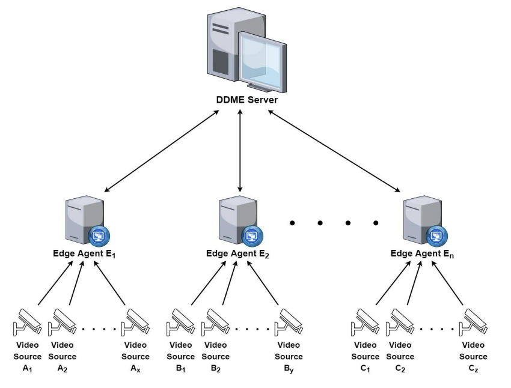
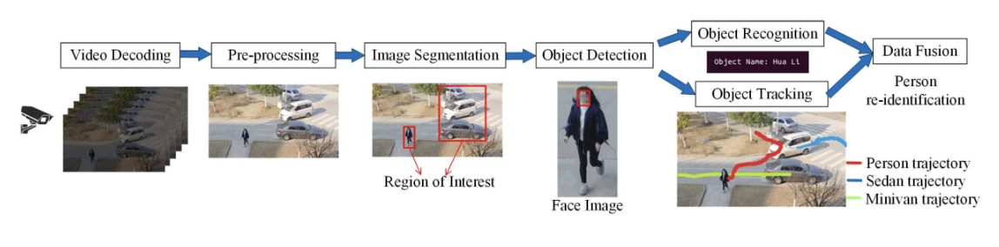
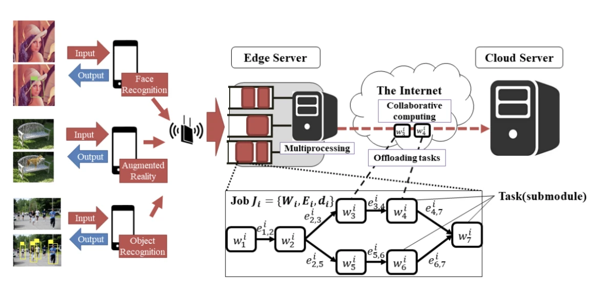

Spatiotemporal Hotspot Detection in NYC Taxi Data
Finding where and when NYC taxi pickups cluster, using Scala and Apache Spark.
Spatial data systems, geographic analysis, and urban and environmental applications.
My interests are in spatial data systems, geographic analysis, and interactive mapping. I am drawn to work that uses location and time to understand movement, cities, and environmental change, including applications in mobility, pollution, climate, and disaster response.
My hotspot project analyzed NYC taxi pickups using spatial joins and Getis–Ord statistics in Spark. My mapping project linked the locations of 309 dinosaur records to an interactive timeline. These projects introduced me to spatial data processing and geographic visualization.
My earlier research focused on distributing video-processing work across edge servers. I now work on university databases and production applications, bringing together my interests in data processing and systems development.
Advisor: Prof. Ashwin G. Kothari
With Apurva Umredkar, I co-developed the Dynamic Decision-Making Engine (DDME). It shifts video-processing tasks from busy edge servers to servers with spare capacity. Here, edge computing means processing data close to where it is collected.
The thesis evaluates processing delays and workload distribution against an existing offloading method.



I coauthored a journal article on optimization-based load balancing for edge computing. Its ISROLBS-ECE method is distinct from the DDME framework in my thesis.
Finding where and when NYC taxi pickups cluster, using Scala and Apache Spark.

Exploring 309 dinosaur records on a world map linked to a geological timeline.